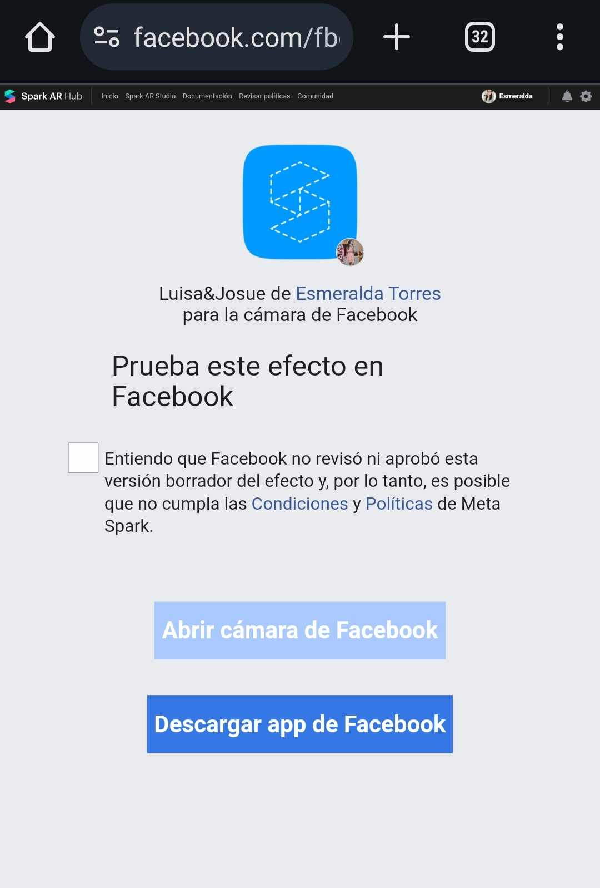
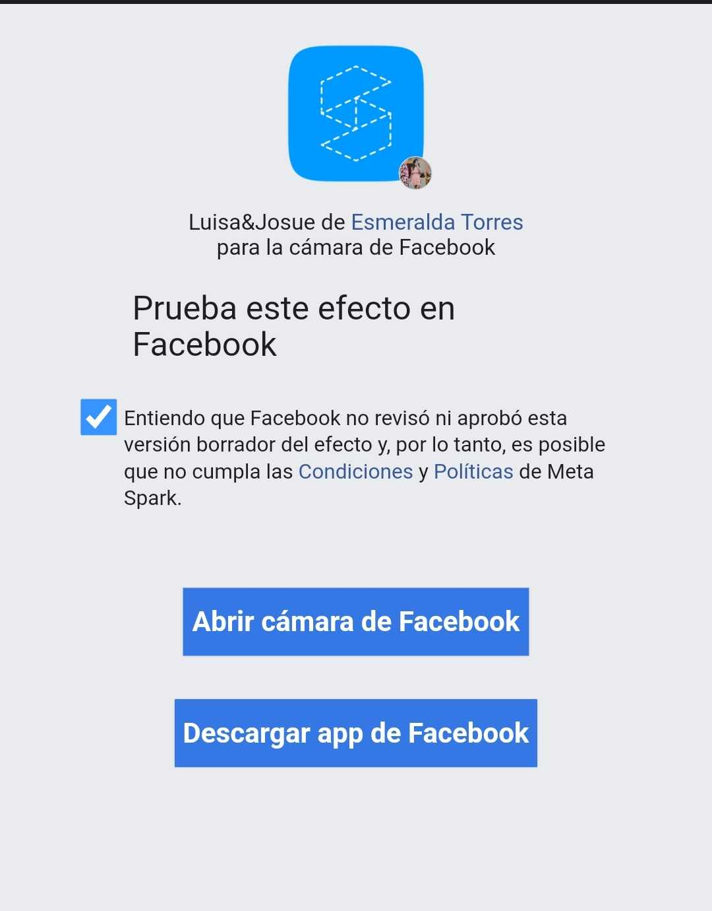
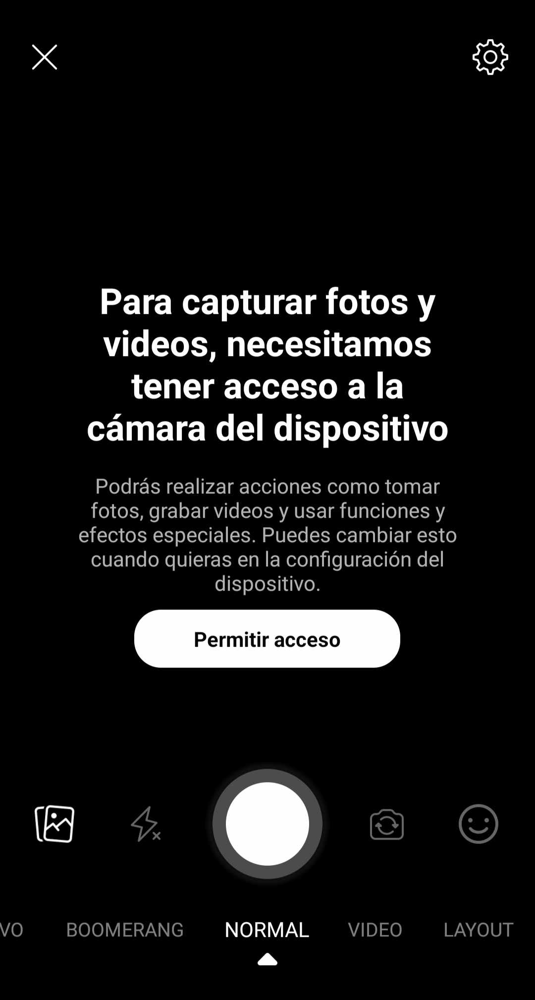
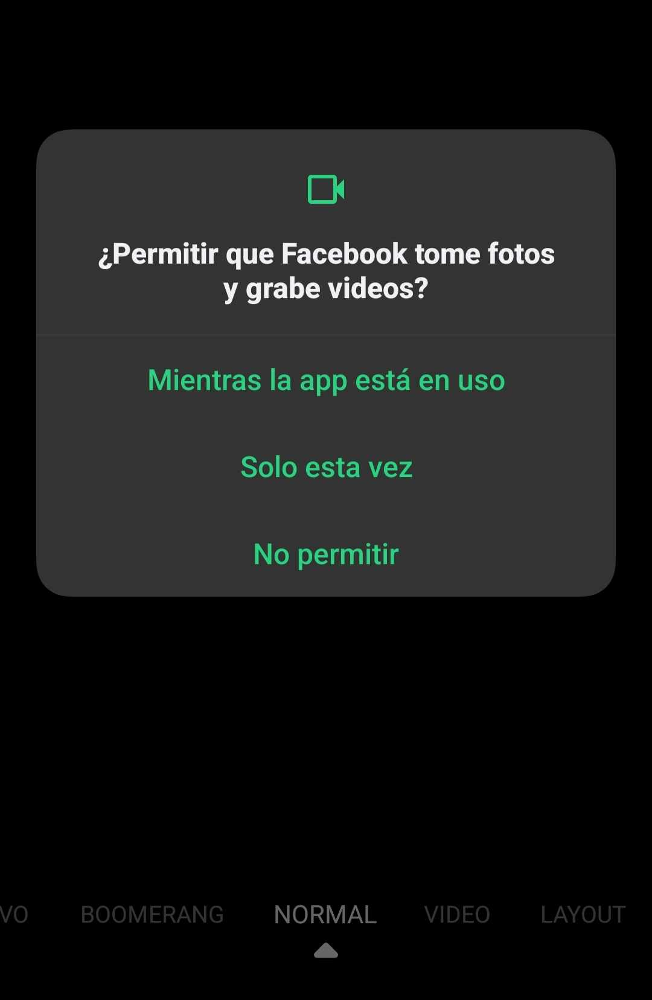

Faltan
Para habilitar este filtro
1. Pulsa sobre la palabra "facebook" en la invitación
2. En caso de que te muestre este mensaje, deberás pulsar el cuadro blanco junto a la palabra "Entiendo"
3. Después pulsa sobre el botón "Abrir cámara de Facebook"
4. En caso de que tu dispositivo no le permita a la aplicación de Facebook tomar fotos o videos, te mostrará este mensaje. Y deberás presionar sobre "Permitir acceso"
5. Te aparecerá este mensaje y puedes seleccionar la opción de "Solo esta vez" o "Mientras la app está en uso"
5.Por último probablemente también te aparecerá este mensaje y puedes seleccionar la opción de "Solo esta vez" o "Mientras la app está en uso"